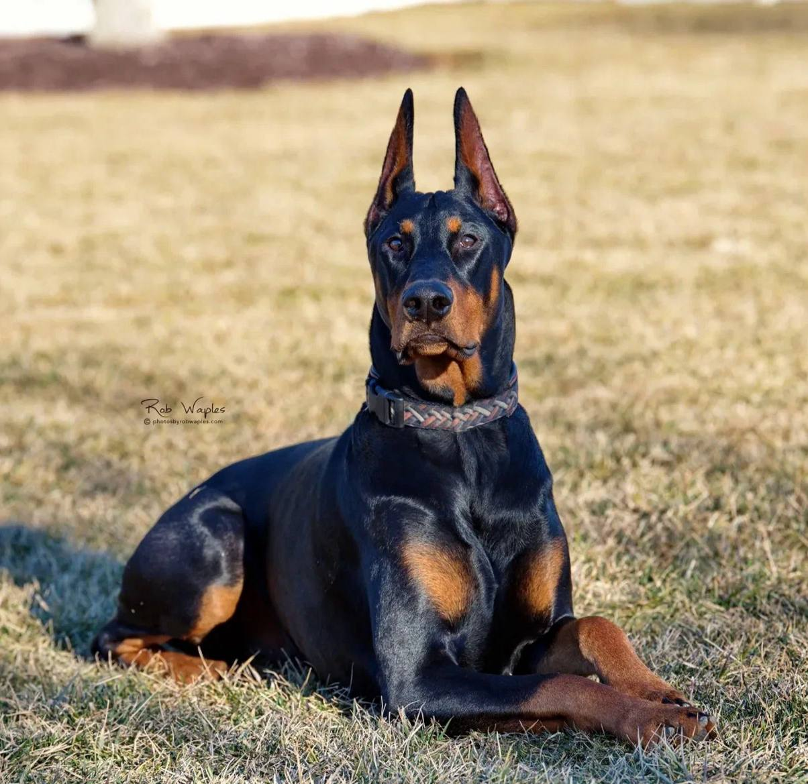

Доберман

Происхождение: Германия
Размер: Крупные (рост: 63–72 см, вес: 32–45 кг)
Характер: Смелые, преданные, энергичные, нуждаются в твердой руке
Особенности: Отличные телохранители, но требуют дрессировки. Короткая шерсть – плохо переносят холод. Высокий интеллект, но могут быть упрямыми
Здоровье: Сердечные заболевания (кардиомиопатия), болезни суставов